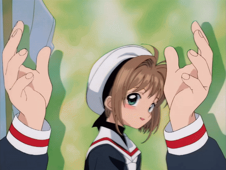
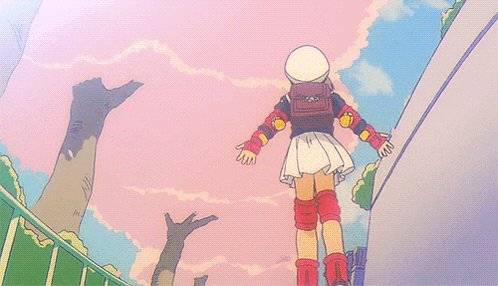

uwu
meow
uwu

Lesbianism?
Lesbianism. Is it unrequited love in a sort of tragically inevitable way? Yes, but I still like gay content. I feel like it's like getting a rouse out of victorian stuff, a time when expressing oneself was more dangerous. Or perhaps it is because it feels like that is a detatched time where the issues are something vaguely in the room we can point to as opposed to the impossing amiguity of reality.
